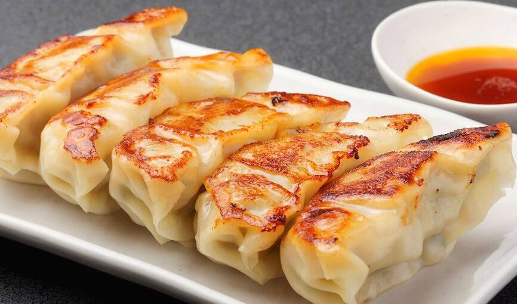

6 Unidades de gyozas rellenas de carne de cerdo con especias cocidas al vapor y grilladas.
La gyoza es una masa rellena, principalmente, de carne y vegetal al vapor o a la plancha. En nuestro caso la cocción es mixta, ya que se doran primero en sartén para luego agregar agua y terminar la cocción al vapor.
Acompañadas de salsa típica con vinagre de arroz y aceite de sésamo. Bowl de arroz opcional.
Precio: $700
Gyoza de Res
6 Unidades de gyozas rellenas de carne de res con especias cocidas al vapor y grilladas.
La gyoza es una masa rellena, principalmente, de carne y vegetal al vapor o a la plancha. En nuestro caso la cocción es mixta, ya que se doran primero en sartén para luego agregar agua y terminar la cocción al vapor.
Acompañadas de salsa típica con vinagre de arroz y aceite de sésamo. Bowl de arroz opcional.
Precio: $700

Gyoza de Pollo
6 Unidades de gyozas rellenas de carne de pollo con especias cocidas al vapor y grilladas.
La gyoza es una masa rellena, principalmente, de carne y vegetal al vapor o a la plancha. En nuestro caso la cocción es mixta, ya que se doran primero en sartén para luego agregar agua y terminar la cocción al vapor.
Acompañadas de salsa típica con vinagre de arroz y aceite de sésamo. Bowl de arroz opcional.
Precio: $700
Yakitori
Yakitori de Cerdo y Verduras
2 unidades grandes de Yakitori de Cerdo y Verduras.
Brochette tradicional japonesa de piezas de cerdo y vegetales (cebolla, hongos shiitake, espárragos, morrón, tomate, berenejena) asados a la parrilla y marinados en salsa teriyaki (mirin, sake dulce, salsa de soja y azúcar). Acompañamiento opcional de Shichimi Togarashi (mezcla de siete especias).
Bowl de Arroz opcional.
Precio: $500
Yakitori de Pollo y Verduras
2 unidades grandes de Yakitori de Pollo y Verduras.
Brochette tradicional japonesa de piezas de pollo y vegetales (cebolla, hongos shiitake, espárragos, morrón, tomate, berenejena) asados a la parrilla y marinados en salsa teriyaki (mirin, sake, salsa de soja y azúcar). Acompañamiento opcional de Shichimi Togarashi (mezcla de siete especias).
Bowl de Arroz opcional.
Precio: $500
Tempura
Tempura de Mariscos y Verduras
20 piezas de Tempura de Mariscos (langostinos, camarones y calamar) y Verduras.
Tempura es la técnica de rebozado y fritura de verduras y pescado tradicional japonesa que logra una textura ligera y crujiente de los alimentos. Fritura especial en aceite de sésamo a 180°.
Servido sobre una cama de arroz o fideos (a elección).
Elección de salsas típica: vinagre de arroz y aceite de sésamo o salsa Tentsuyu hecha a base de caldo, salsa de soja y sake dulce con ralladura de jengibre, ralladura de rábano y especias.
Precio: $1200
Tempura de Pollo y Verduras
20 piezas de Tempura de Pollo y Verduras.
Tempura es la técnica de rebozado y fritura de verduras y pescado tradicional japonesa que logra una textura ligera y crujiente de los alimentos. Fritura especial en aceite de sésamo a 180°.
Servido sobre una cama de arroz o fideos (a elección).
Elección de salsas típica: vinagre de arroz y aceite de sésamo o salsa Tentsuyu hecha a base de caldo, salsa de soja y sake dulce con ralladura de jengibre, ralladura de rábano y especias.